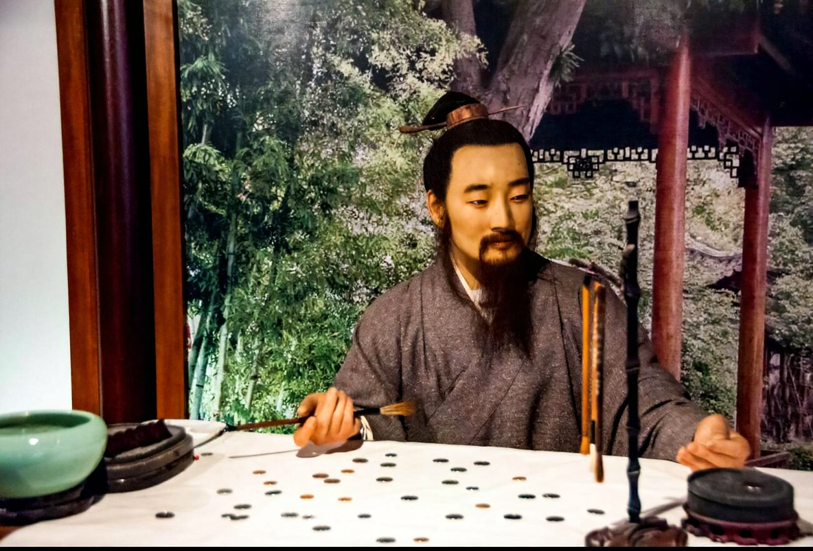
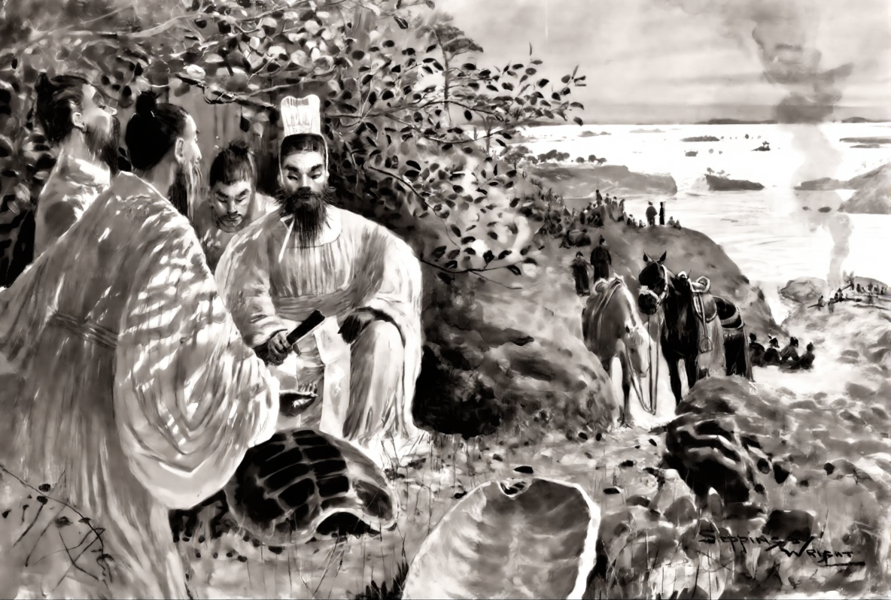
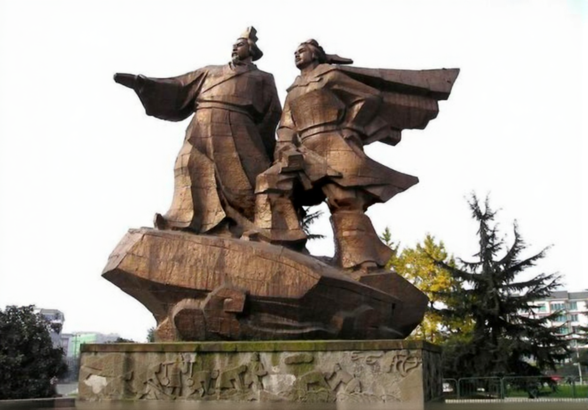

China’s ancient architectural achievements are inseparable from the wisdom and dedication of outstanding architectural scientists, engineers, and craftsmen who combined scientific knowledge with practical experience. Although many ancient builders did not leave behind personal records in the modern sense, their intellectual contributions are preserved in architectural manuals, engineering projects, and enduring monuments. These individuals embodied a scientific spirit characterized by innovation, precision, perseverance, and harmony with nature.

Li Jie of the Northern Song Dynasty
One of the most influential figures in ancient Chinese architecture is Li Jie of the Northern Song Dynasty. He was the chief compiler of the architectural treatise Yingzao Fashi (Treatise on Architectural Methods), published in 1103. This work systematically documented building standards, structural techniques, materials, and measurements. It reflects advanced knowledge of mathematics, mechanics, and material science, making it one of the world’s earliest architectural codes. Li Jie’s dedication to standardization and accuracy demonstrates a rigorous scientific attitude and laid the foundation for centuries of architectural practice in China.

Yu the Great Ruler between (2200 – 2100 BC)
Another outstanding figure is Yu the Great, a legendary ruler credited with controlling floods through large-scale hydraulic engineering. His efforts, symbolized by early water management systems, represent the application of environmental science and geology in ancient times. Rather than opposing nature, Yu emphasized working with natural water flows, embodying a scientific mindset rooted in observation, experimentation, and sustainability. This philosophy greatly influenced later architectural and engineering projects.

Li Bing of the Qin Dynasty
The anonymous master builders behind projects such as the Dujiangyan Irrigation System, led by Li Bing during the Qin Dynasty, also deserve recognition as distinguished architectural scientists. Li Bing applied principles of hydrodynamics and terrain analysis to design a system that has functioned continuously for over two millennia. His work reflects a spirit of innovation, responsibility, and long-term thinking, prioritizing public welfare and environmental balance.